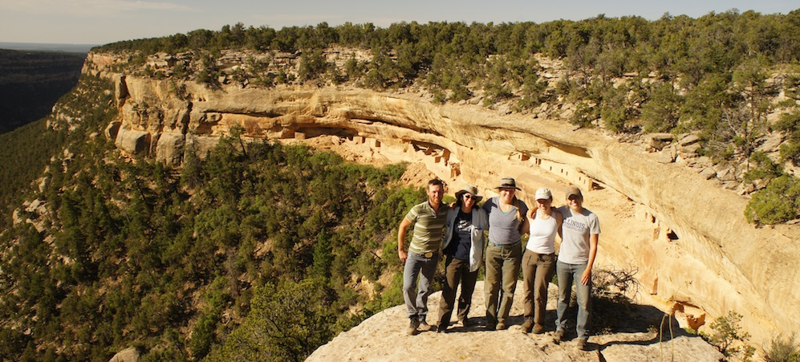

 ### R. Kyle Bocinsky I am a **computational archaeologist** interested in human responses to environmental change. Currently, I have a research post-doc with <a href="http://www.envirecon.org" target="_blank">SKOPE</a>—Synthesized Knowledge of Past Environments. I work to bring data on paleoenvironments to archaeologists and the general public. I live in Pullman, Washington. I develop software—in <a href="http://www.r-project.org" target="_blank">*R*</a>, <a href="https://www.python.org" target="_blank">*Python*</a>, and <a href="http://grass.osgeo.org" target="_blank">*GRASS*</a>—to support reproducible research in archaeology. I am particularly interested in scalable analysis, high performance computing, and data visualization. Most of my research has focused on the Ancestral Pueblo Southwest, but I also have projects on the Northwest Coast of North America, sub-Saharan Africa, and on the Tibetan Plateau. *** #### contact College Hall 390 Department of Anthropology Washington State University Pullman, WA 99164-4910 **phone** 770.362.6659 **email** [bocinsky@gmail.com](mailto:bocinsky@gmail.com) *** <a href="http://github.com/bocinsky" target="_blank"> <img src="https://assets-cdn.github.com/images/modules/logos_page/GitHub-Mark.png" height="55px"/> </a> <a href="https://wsu.academia.edu/bocinsky" target="_blank"> <img src="https://a.academia-assets.com/images/black-academia-logo.png"/> </a> <a href="https://www.facebook.com/kyle.bocinsky" target="_blank"> <img src="./media/FB-f-Logo__blue_100.png" height="35px"/> </a>